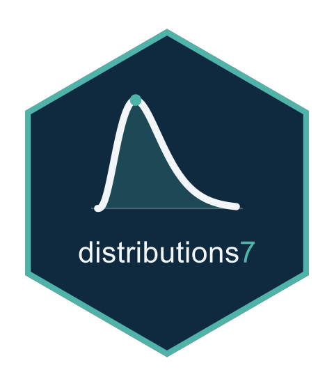

The Second Derivatives of the Zero Wrappers' Expected Information
Source:R/zero_wrapper_dexpected.R
zero_wrapper_d2expected.RdCompute the second derivatives of the expected information of
zero_inflated() and zero_adjusted() families in closed form, on the
parameter scale, by differentiating the expressions of
zero_wrapper_dexpected() once more.
Usage
zero_wrapper_d2expected(distrib, y, theta, threads = 1L)
d2_quotient(N, Nc, Nd, Ncd, L, Lc, Ld, Lcd)
zw_disc_parts(tm)
zi_d2expected_entry(i, j, c, d, tm)
za_disc_d2expected_entry(i, j, c, d, tm)
za_cont_d2expected_entry(i, j, c, d, tm)Arguments
- distrib
A family from
zero_inflated()orzero_adjusted().- y
The response, read for its length.
- theta
The parameters, the parent's followed by the mixing probability.
- threads
The thread count passed to the parent's methods.
- N, Nc, Nd, Ncd, L, Lc, Ld, Lcd
A numerator and a denominator with their first derivatives in \(c\) and \(d\) and their second derivative.
- tm
A list of the parent's quantities: functions
e0,e1,e2of parameter indices returning the expected information and its first and second derivatives, the probabilityz, the indexmof the probability, the lengthn, and, for a discrete parent, the massfand functionss,H,Treturning the score, Hessian and third derivatives at zero.- i, j, c, d
The indices of one entry: the pair \((i,j)\) and the pair \((c,d)\) differentiated, the parent's parameters first and the probability last.
Value
A named list keyed as d2expected_names(), each component of
length length(y), on the parameter scale.
Details
The parent enters through its expected information and its first and second derivatives, and, for a discrete parent, through its mass \(f\), score \(s\), Hessian \(H\) and third derivatives \(T\) at zero, with \(\partial_c f = f s_c\), \(\partial_c s_i = H_{ic}\) and \(\partial_c H_{ij} = T_{ijc}\). Each entry of the zero-inflated information is a product or a quotient of these quantities and of the probability, and its second derivative is formed by Leibniz's rule; a quotient \(N/L\) uses $$\partial_{cd}(N/L) = \frac{N_{cd}}{L} - \frac{N_c L_d + N_d L_c}{L^2} - \frac{N L_{cd}}{L^2} + \frac{2 N L_c L_d}{L^3}.$$ The zero-adjusted discrete entries \((1-\pi)[E_{ij}/q + f s_i s_j/q^2]\) are differentiated through \(1/q\) and \(1/q^2\), and the continuous ones are \((1-\pi)\) times the parent's.
Each entry is computed by zi_d2expected_entry(),
za_disc_d2expected_entry() or za_cont_d2expected_entry(), and
d2_quotient() gives the second derivative of a quotient.
zw_disc_parts() returns the quantities shared by the discrete entries,
as functions of parameter indices: \(f s_i s_j\) and \(f s_i\) with
their first and second derivatives, which vanish in the probability, and
\(q = 1 - f\) with its derivatives.